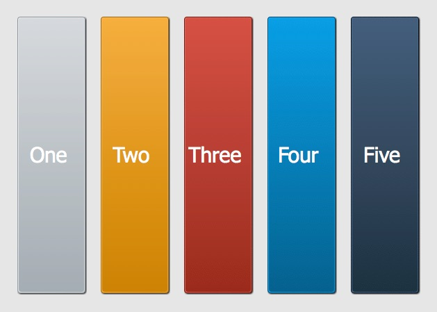

class org.aswing.SoftBoxLayout extends EmptyLayout
| Sub classes | ||||
 | DefaultMenuLayout |
| ||
The SoftBoxLayout will layout the child components using their preferredWidth or preferredHeight instead of width or height.
It ignores the preferredWidth when set to Y_AXIS, ignores the preferredHeight when set to X_AXIS.
When set to X_AXIS, all of the child components share the same height from the container and use their own preferredWidth
When set to Y_AXIS, all of the child components share the same width from the container and use their own preferredHeight
The picture below shows that when set X_AXIS, all of the child component share the same height no matter what value you set for the componnet.
It ignores the width and height property you set for the child component.

The picture below shows that when set Y_AXIS,all of the child component share the same width no matter what value you set for the componnet.
It ignores the width and height property you set for the child component.
Note: The align is set to RIGHT, when axis set to Y_AXIS and align set to right, the children are ajusted to the bottom,
at top ,there are still free space.

See Also
- BoxLayout Author paling
Class Fields
This value indicates that each row of components should be right-justified(X_AXIS)/bottom-justified(Y_AXIS).
This value indicates that each row of components should be left-justified(X_AXIS)/top-justified(Y_AXIS).
This value indicates that each row of components should be right-justified(X_AXIS)/bottom-justified(Y_AXIS).
This value indicates that each row of components should be left-justified(X_AXIS)/top-justified(Y_AXIS).
Instance Fields
 | Show inherited public instance fields | Hide inherited public instance fields
|